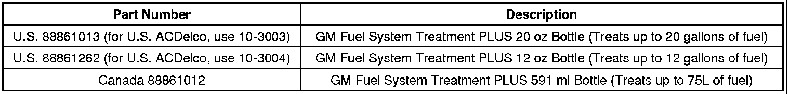

Fuel System - GM Fuel System Treatment PLUS(R) Info.
INFORMATIONBulletin No.: 05-00-89-078C
Date: April 19, 2012
Subject: GM Fuel System Treatment PLUS, Fuel Sending Unit Corrosion and Fuel System Deposits
Models:
2013 and Prior GM Passenger Cars and Trucks
Supercede:
This bulletin is being revised to add model years Parts Information. Please discard Corporate Bulletin Number 05-00-89-078B (Section 00 - General Information).
Important
The GM Fuel System Treatment PLUS is not recommended for use with diesel fuel. The GM Fuel System Treatment PLUS is specially formulated for use in gasoline and/or E85 fuels.
GM Fuel System Treatment PLUS
GM Fuel System Treatment PLUS is now available for use in gasoline engines.
Added Benefits and Uses
The PLUS portion of GM Fuel System Treatment PLUS is the addition of a filmer additive that, when used regularly, can protect fuel system sending units from the corrosive effects of certain sulfur contaminants found in some of today's gasoline.
Sulfur contamination can disrupt electrical continuity of certain fuel sending units and lead to erratic or false fuel gauge readings. With scheduled usage, GM Fuel System Treatment PLUS protects against the effects of harmful sulfurs in gasoline.
The Four Benefits
Just pour in one bottle of the GM Fuel System Treatment PLUS into the fuel tank when refueling around each oil change interval:
- Cleans - Sulfur corrosion from fuel gauge sending units.
- Prevents - Harmful sulfur components from attacking sensitive fuel system electronics.
- Protects - By coating metallic surfaces of the fuel system.
- Removes - Engine deposits left from use of poor quality fuels.

Parts Information

Disclaimer